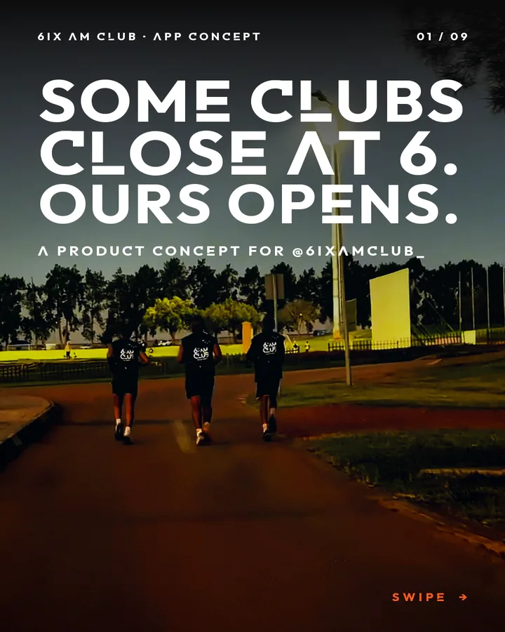
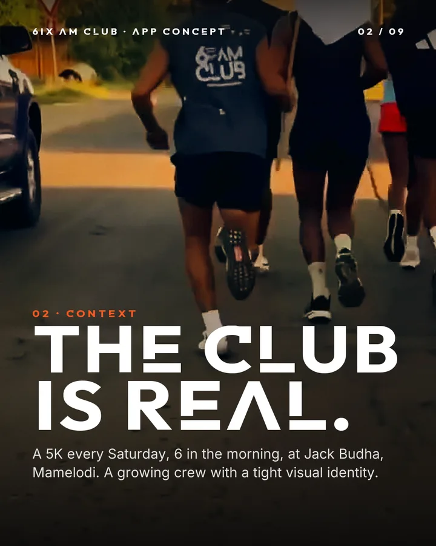
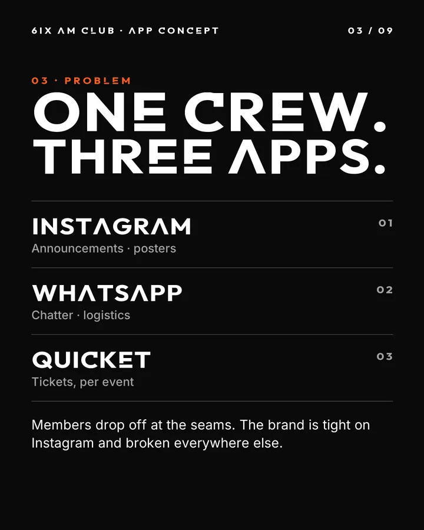
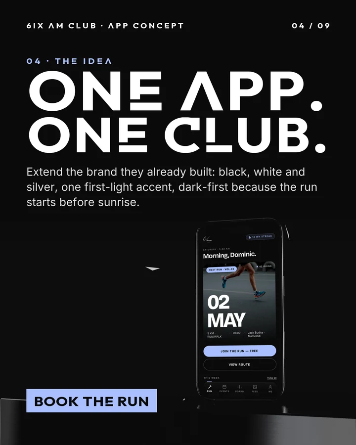
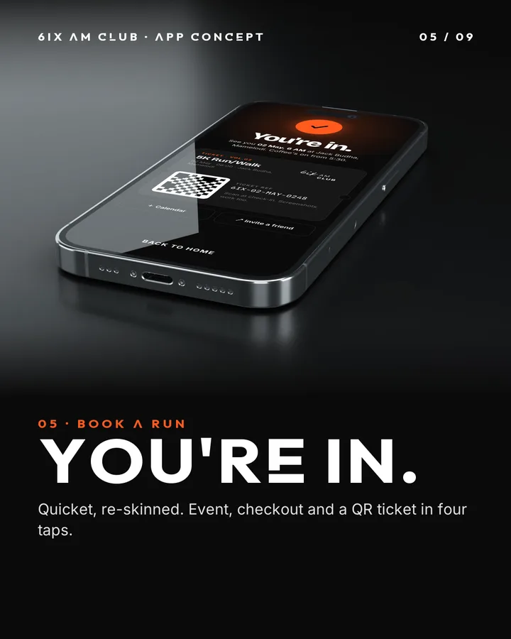
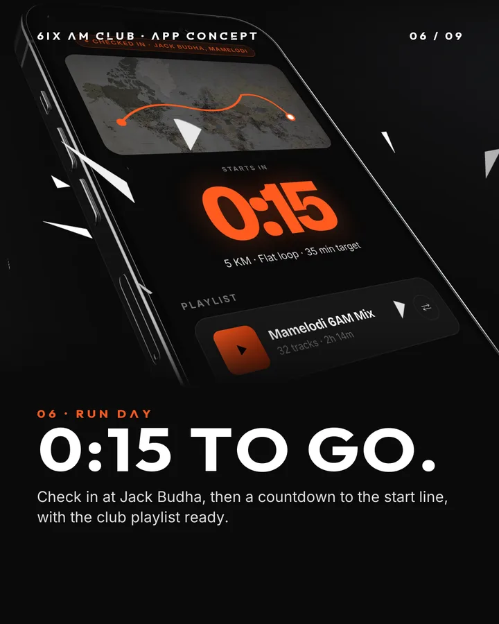
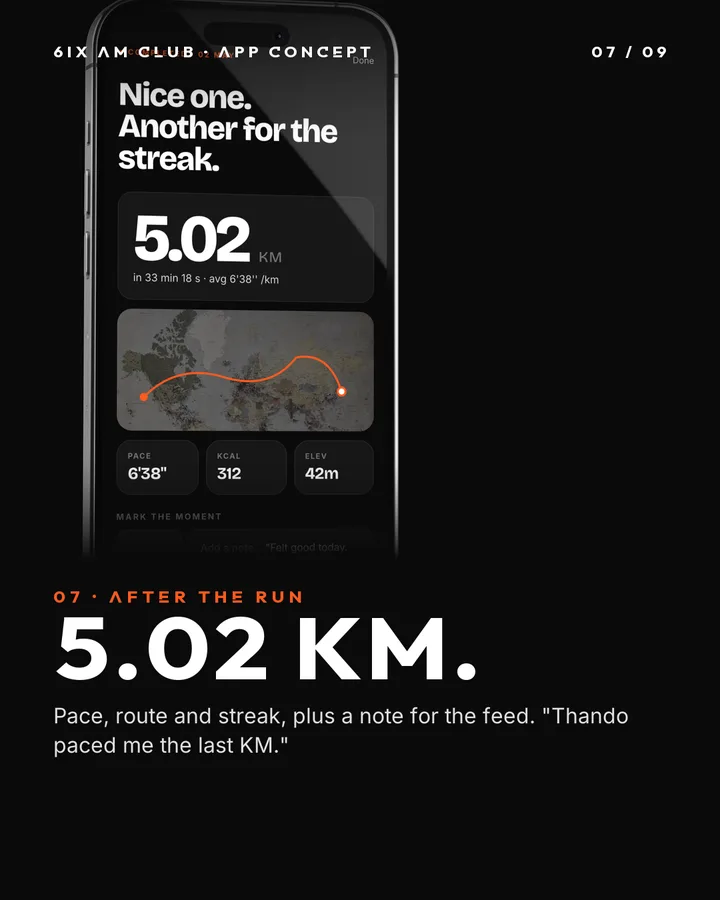
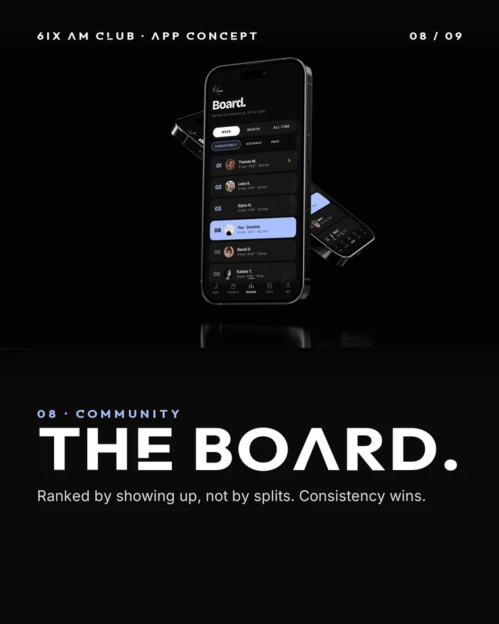
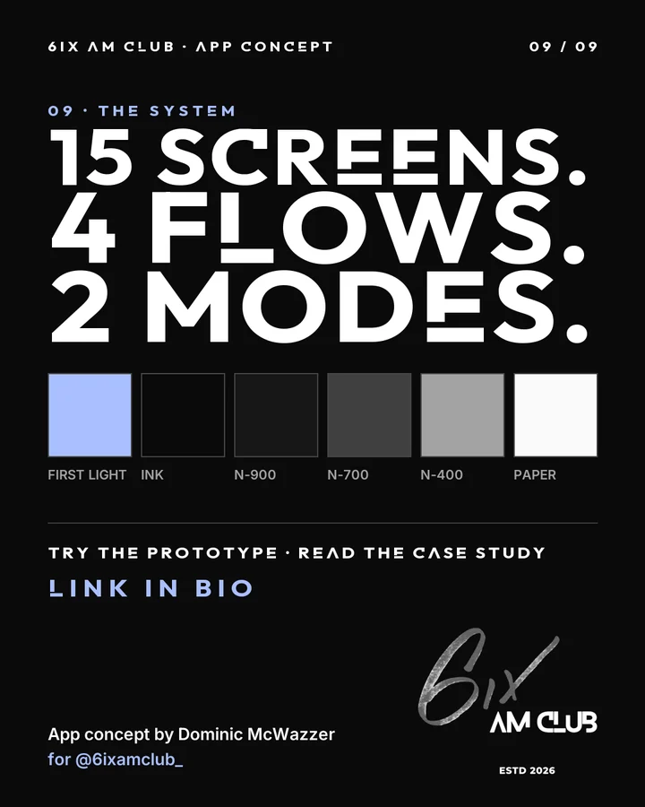

Drop 01 · UI · Motion · Nov 2026
The idea
It started with a question: what would 6ix AM Club, a Saturday 6 AM run crew out of Jack Budha, Mamelodi, look like as an actual running app?
The club already had the brand: posters, one orange accent, the 6 AM energy. But the experience lived across three apps: Instagram for announcements, WhatsApp for logistics, Quicket for tickets. So I designed the product that brings it into one: book the run, count down to the start line, track it, show up on the board.
That idea became this series. A new drop every week, in any digital medium.








